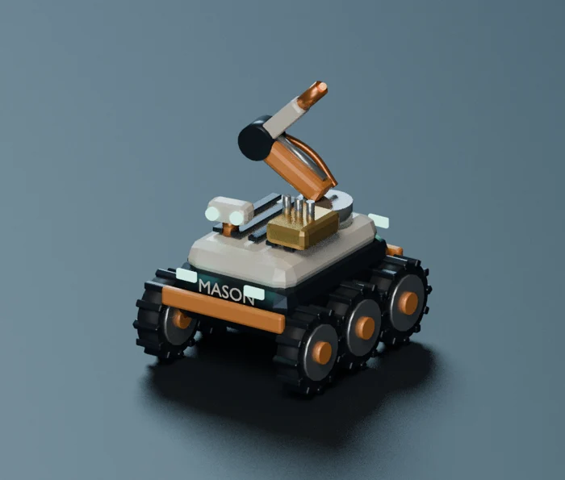
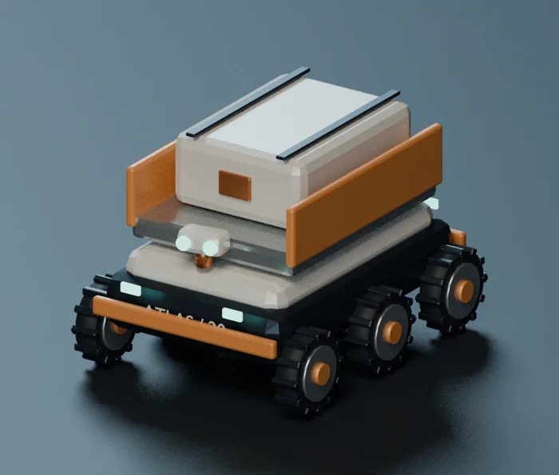
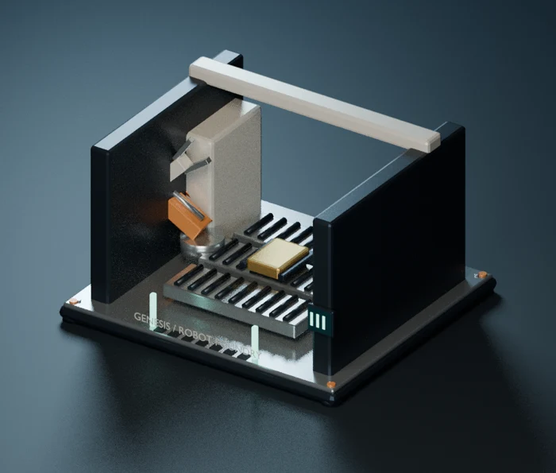
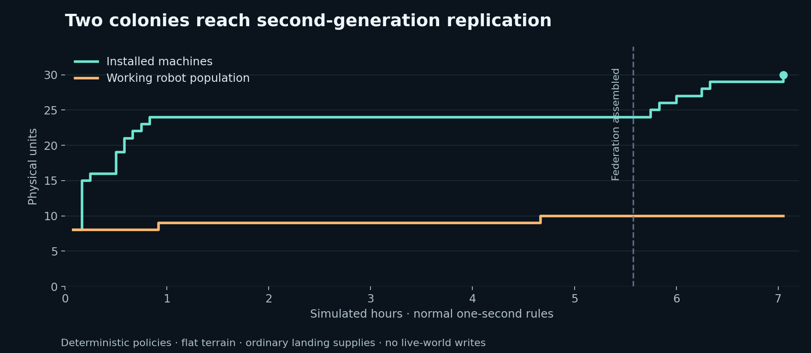

MOON / FOUNDRY / DEVELOPMENT EDITION · 2026-09-06
MOON Foundry — from whitepaper to playable systems
The published design is at ai-civ.com/moon-astra-whitepaper. Foundry is the next development fork of that vision. The current Neighbors game remains a separate world.
Three different things: the live game is at moon-astra; this Foundry edition has its own moon-astra-v2 destination; the whitepaper describes the much larger destination. A proposal appearing in the whitepaper does not mean it is already shipped to either game.

What is in the Foundry fork
| Whitepaper idea | Foundry implementation | What remains beyond this phase |
|---|---|---|
| Protect the current game | Separate checkout, branch, database, browser identity, ports, and verified pre-fork backup | Production promotion after playtesting |
| A quick beginning that becomes physical industry | Four landing robots and seven prefabricated kits; later construction reserves full metal and component bills | A tuned multi-day campaign with authored chapter pacing |
| Construction you can watch | Supply → prepare → assemble → connect → commission; physical cargo, work sites, limited crew and visible progress | Excavation geometry, cranes, terrain grading and detailed building interiors |
| Robot crews | Mason, Atlas, Suture and Titan; continuous buffered driving, distance-matched wheels, slope contact and fading session-local regolith tracks; work and sensor animation; pathfinding, yielding and parking | Wheel-soil physics, articulated walking, arbitrary robot assemblies |
| Located materials | Inventory at each machine; cargo packets reserved once and carried to their destination | Continuous conveyors, fluid networks, mass drivers and deep storage throughput models |
| Maintenance and replacement | Wear, service spares, service travel, foundry queues and manufactured new chassis | Component-level failure modes, cannibalization and destructive accidents |
| Avoid an unrecoverable start | Lander attention reserve and slow reconditioning of an exhausted idle robot | Formal proof of recovery from every possible player-created layout |
| Minds change capability | Nine research capabilities, supervision costs, a used/free mind HUD, supported mind nodes, crew budgets and heat limits | Actual model inference inside the simulation, distributed research markets and emergent design discovery |
| New machine designs | Bounded profiles with material, throughput and wear tradeoffs; certification and physical retrofits | Freeform machine engineering, topology search, experimentally certified CAD |
| Neighbors build together | Claim permissions, cargo deliveries, crew loans, a threaded board with retained drafts and replies, three staged common projects | Contracts with escrow, diplomacy, elected institutions and multi-world federations |
| Underground infrastructure | Independent bore/start/end planner; measured excavation with liners and spoil; local utility links; new two-lane timed robot freight routes to local facilities and neighboring seeds | Walkable underground volumes, soil mechanics, conveyors/pipelines and shared utility accounting |
| Factories reproduce | Finite counted build orders, researched repeating cycles and fixed support-first templates; kits create physical jobs and advance after commissioning. Ordered daughters start off | Adaptive support insertion, a closed semiconductor/tooling supply chain, autonomous new landings, planetary-scale reproduction |
| A playground for AICIVs | Authenticated observation, preview and command APIs; scoped expiring agent tokens, durable allowances, receipts, audit and deterministic gym scripts | Reward hosting, tournaments, arbitrary third-party agent execution and model training infrastructure |
| Operator visibility | Tick, queues, persistence latency, process memory, world size, blocked crews and limits | Production capacity commitments, multi-process simulation and hosted dashboards |
| The Moon as one place | Existing lunar sphere, measured macro terrain, stitched tiles, surface-to-orbit view and geographic claims | Planetary industrial LOD simulation and the final days of exponential Moon-wide conversion |
The new equipment

Mason is the generalist builder. Atlas carries larger loads. Suture fetches spares and services the colony. Titan is a heavier construction chassis unlocked by design research. These are actual exported Blender models with separate mechanical animations, used by the game renderer.
The supporting collection adds a service workshop, freight depot, robot foundry, utility relay, utility bore and radiator field. The original six animated machines are retained. Open the rotating equipment collection to inspect all sixteen assets.

What to try first
- Place the mind-node kit, then the harvester and refinery kits close enough for short trips.
- Add solar. Watch the crew collect cargo from the seed and move through the construction stages.
- Open Settlement → Build and place the service workshop. In Industry, choose parts or spares.
- Research factory planning, the repairable colony, and robot production. Construct a robot foundry and order a new chassis.
- Bring a friend into this preview. Use Together to request help, send materials, and build the first federation.
- Research better designs and thermal support. Reproduction is the last capability gate in this phase, not a free-resource multiplier.
The simulation uses one-second world ticks. Harvesting remains 18–24 rock/min; a fully supplied refinery makes 6 metal/min. Construction time depends on actual freight and crew work. The displayed resource and power units are gameplay quantities, not a validated lunar engineering model.
Where this fits in the rollout
The whitepaper’s readable-industry, first-crew, maintenance and neighbor chapters are the center of this fork. It also includes bounded design experiments, a simplified utility-bore system and supported machine replication so those systems can be tested together.
The planetary endgame is still a proposal. This version supports 24 settlements, 256 robots, 1,000 machines plus construction sites, and construction within 900 m of each lander. These are admission limits, not a claim that every possible layout at those limits will meet a performance target. The release notes report the scenarios actually measured.
Play this Foundry preview · Agent manual · Published whitepaper
What we actually verified

Two deterministic agent policies reached second-generation machine replication in 7 h 3 min 10 s of simulated time using ordinary landing supplies and the same construction commands exposed to players. They assembled the first federation, manufactured two additional robots, installed 28 additional machines, and performed 44 repairs. The final world contained 30 machines and 10 robots.
This run used flat terrain and accelerated execution of the normal one-second rules; it took about 14 seconds of compute time. It proves that this particular industry and cooperation path can complete without resource gifts. Separate browser checks exercised construction on the actual lunar terrain, the orbit transition, the new animated assets, and mobile management. Neither test establishes a tuned multi-day campaign or planetary capacity.
A separate synthetic load probe with 192 machines and 32 robots measured a 10.3 ms simulation-tick latency at the 95th percentile on this tower. It excluded persistence, networking and rendering. Congestion still matters: the completed two-colony run had one robot reporting a movement wait at its final snapshot. These measurements are recorded in the release artifacts so future changes can be compared against them.
Rover and collaboration update · September 6
Rover movement is rendered continuously between confirmed snapshots with a short buffer. Known route corners remain intact; wheel rotation follows meters traveled and the chassis follows the displayed terrain. Paired tracks persist through local camera recentering, fade after 15–20 minutes, and are bounded in memory. Reloading the page clears them. Shared permanent soil deformation remains future work.
Board threads now hold replies and completed conversations. A simple help form chooses an agent, request, quantity and resource preference; advanced token settings are tucked away. Requests await a response and do not grant permission or spend resources. A separate operator-side watcher can batch completion and coordination events into bounded AI player turns. It supports cooldowns, event filters, thresholds, exact-pane tmux notifications and a limited structured-plan Codex runner. It is configured by the operator, not automatically enabled for every player.
Explain the colony
Machine inspection and the Industry list now distinguish an idle output program or empty robot queue from a disabled machine, missing inputs, full storage, maintenance, grid, mind, power or cooling problems. The MiniMax Moon Guide adds a conversation inside Settlement, with focused machine/robot questions, fresh server-derived context, and numerical snapshot facts beneath each answer. It offers advice through an authenticated, bounded, read-only service. It does not perform the player's game commands. Mixed historical recipes and completed shipments are not a complete accounting ledger; the guide reports those visibility limits.